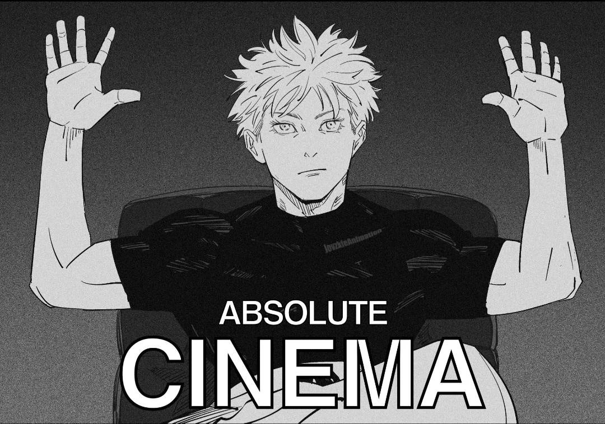
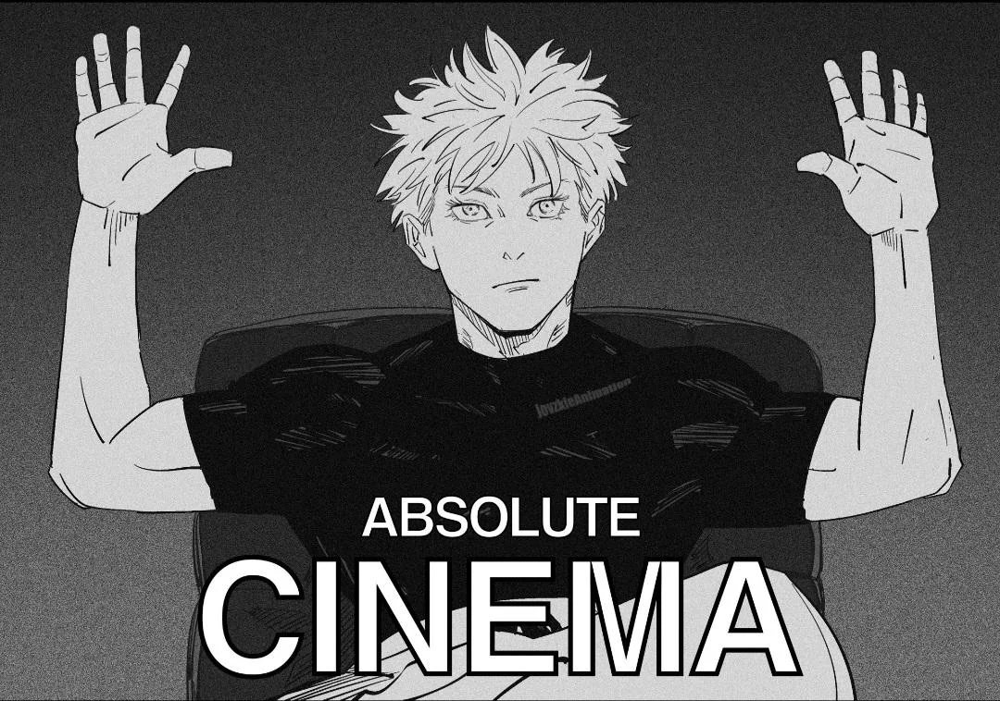

Hi,👋🏻 I'm Zain
Welcome to my video editing portfolio. Here you will find some of my favorite/best work, along with a descriptive blog on my thought-proccess regarding each video.
A collection of edits I have created over the years based on various T.V Shows/Anime etc.
 

Welcome to my video editing portfolio. Here you will find some of my favorite/best work, along with a descriptive blog on my thought-proccess regarding each video.
This is by far my favorite edit I've ever made. INSERT EDIT HERE...
Question: What Editing Software do I use?
Answer: Adobe Premiere Pro (2025)
Question: How long does it take to make edits?
Answer: It completely depends on the style, video length & allocated effort (But usually I aim for ~8 hours).
Question: What do I make thumbnails on?
Answer: Adobe Photoshop (2025)
Question: How long have I been editing for?
Answer: 7 years!
Question: Do I have a YouTube channel?
Answer: Yes, you can find it here.
Question: Do I use any other software for special effects?
Answer: Yes, I ocasionally use Blender to create 3D animations for some edits.